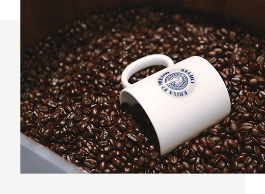
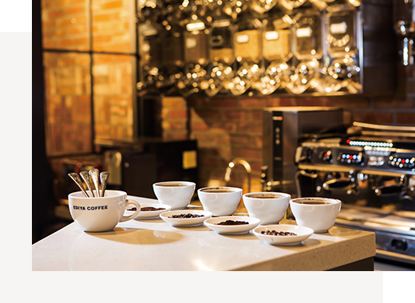
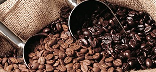
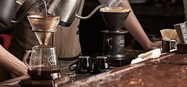
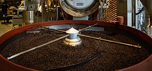
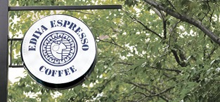
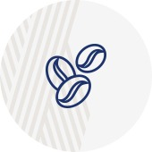
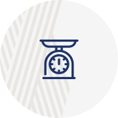
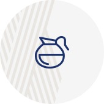

원두
ALWAYS BESIDE YOU,
EDIYA BEAN이디야커피가 고객을 위해 지켜온 약속입니다.
-

- 이디야커피는 고품질의 아라비카 100% 원두만을 공급합니다.
-
원두가 가장 잘 자라는 기후와 비옥한 토양을 가진 커피벨트에서
생산된
고품질의 원두를 엄선하여 더욱 완벽한 맛과 풍미를 제공합니다.
-
- 커피 본연의 신선함을 제공합니다.
-
다년간 축적된 이디야커피만의 원두 관리 노하우를 바탕으로
원두가 가진 고유의 맛과 향 그대로 신선한 커피만을 제공합니다.
-

- 커피를 연구하는 최고의 분야별 전문가와 함께 합니다.
-
수많은 전문가들이 더 좋은 커피를 만들기 위해 함께 연구하고,
지속적인 투자로 국내 최고의 시스템을 구축하고 있습니다.
-
세계 각지에서 선별된
이디야 최고의 원두를 소개합니다. -
커피벨트에서 생산되는 스페셜티 급의 품질 좋은 생두를 엄선하여
까다로운 블렌딩 과정을
거쳐 이디야의 스페셜티 원두로 다시 태어납니다.
이디야 원두의 특징
커피 본연의 풍부한 향을 첫 느낌으로,
고소한 단맛과 구수한 쓴맛,
깊고 중후한 긴 여운을 품고 있는 균형 잡힌 향미의 조화
이디야 원두의 특징
-
에티오피아
에티오피아는 커피의 원산지입니다. 전 세계 커피 중에서도 매우 색다른 향미를 지니고 있어 그 인기가 매우 높습니다.
주요 산지는 하라(Harra), 예가체프(Yirgacheffe), 시다모(Sidamo), 리무(Limmu)이며, 그 중에서도 시다모는 부드러운 신맛과 단맛 꽃 향이 가득하며, ‘커피의 귀부인’이라는 칭호를 받고 있습니다.
리무는 전통적인 채집 산물로 와인같은 향과 묵직한 아로마와, 단맛과 신맛이 조화로운 커피로 평가받고 있습니다. -
콜롬비아
마일드 커피의 대명사이며, 세계 3위의 커피 생산국입니다.
주로 산악지방에서 생산되며, 커피 생두는 크기가 크고 깨끗하며 연녹색입니다. 향기가 독특하고 쌉싸름함이 느껴지며, 스트레이트로 마시거나 블렌딩으로 많이 사용하고 있습니다.
콜롬비아 커피는 생두의 크기로 등급을 분류하며, 수프리모(Supremo) 등급이 유명합니다. -
케냐
아프리카의 대표적인 커피 중 하나입니다.
해발고도 1,500~2,000m 사이에서 재배되며, 진한 청녹색의 케냐 커피는 고급 커피로 유명합니다.
독특한 쌉싸름, 와인 같은 진한 풍미, 과일 같은 신맛을 느낄 수 있습니다.
케냐 커피는 생두의 크기로 등급을 분류하며, 케냐 AA와 케냐 PB(Peaberry, 피베리) 등급이 유명합니다. -
과테말라
커피 재배를 하기에 최적의 조건을 갖춘 나라 중 하나입니다. 화산 폭발이 일어나면서 나온 질소를 비옥한 토양 커피 나무가 흡수하여, 부드러우면서도 바디감이 강한 스모크향의 풍부한 맛이 가득한 과테말라 커피를 만들어 줍니다.
과테말라 커피는 생두의 등급을 재배지의 해발 고도로 분류하며, SHB(해발고도 1,300~1500m) 등급이 가장 좋습니다. -
브라질
브라질 커피는 전 세계 커피 시장의 주요 공급원이며, 커피 생산의 세계 1위며, 약 30%를 차지하고 있습니다.
적당한 햇빛과 비, 기온, 풍부하고 다공성의 토양 등 천혜의 커피 재배 환경을 가지고 있습니다.
브라질 커피는 무게감 있는 바디, 고소하고 달콤한 맛을 나타내며 상대적으로 산도가 낮고, 부드러운 커피를 즐기실 수 있습니다.
이디야 로스팅
-

- 생두 선별
- 세계 커피 산지 별 품질이 우수한 제품들을 선별하여 저온 보관을 합니다.
커피 본연의 맛과 향에 영향을 줄 수 있는 이물질(나뭇가지, 잎사귀, 돌 등)을 제거합니다.
-

- 샘플 로스팅
- 국내 최고의 Q-grader(커피 감별사)와 커피 전문 Roaster(로스터)가 커피의 특성을 파악하기 위해 샘플 로스팅을 합니다.
-
- 블렌딩 커핑
- 고객에게 더 맛있는 커피를 제공하기 위해 여러 번의 커핑작업과 블렌딩을 통한 테스트를 시행합니다.
-

- 제품 로스팅
- 커피 본연의 맛과 향을 더욱 느낄 수 있도록 전용 로스팅 기기로 제품을 생산합니다.
-

- 매장 공급
- 신속한 제품 포장을 하여 커피가 가장 신선하고 맛과 향미가 가장 풍부한 기간에 이디야 매장에 공급합니다.
-
- 고객 판매
- 최고의 바리스타와 서비스로 고객에게 감동을 드리는 커피, 이디야커피 입니다.
이디야 블렌딩
-

- 적합한 생두 선택
-
각 산지 별 커피의 특성을 이해한 후
블렌딩에 적합한 최고의 원두를 선별합니다.
-

- 엄격한 품질 관리
-
1년 365일 언제나 좋은 품질의 커피를 만들기 위해
엄격한 품질 관리를 합니다.
-

- 최적의 로스팅 노하우
-
커피 본연의 맛을 추출하기 위한
최적의 로스팅을 합니다.